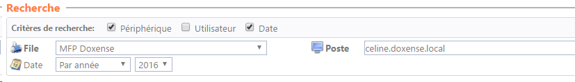
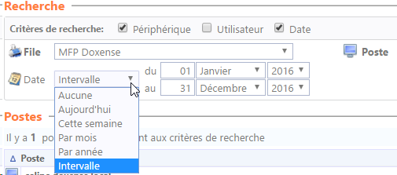
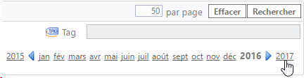
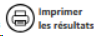
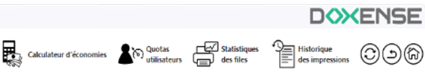

Bilans - Consulter et exporter un bilan
Consulter un bilan
Pour concevoir la requête:
-
choisissez l'onglet correspondant à l'entité pour laquelle vous souhaitez obtenir un rapport d'activité (utilisateur, rôle, appareil, etc.).
-
dans la section Recherche, cochez les cases correspondant aux critères que vous souhaitez utiliser pour la conception de la requête (Périphérique ou Utilisateur) ;
-
saisissez vos critères de recherche dans le champ dédié ou choisissez-les dans les listes lorsqu'elles existent.

-
choisissez la date ou la plage de dates pour laquelle vous souhaitez obtenir des données
-
grâce aux listes déroulantes (Plage, Par mois, Par année, etc.) :

-
-
grâce aux flèches permettant de choisir l'année :

-
Puis cliquez sur le bouton Chercher pour lancer la requête.
-
Le rapport consulté est affiché dans la section inférieure de l'interface.
Exporter un bilan
Pour exporter le bilan:
-
vérifiez le résultat de la requête dans la section dédiée et reformulez votre requête si nécessaire ;
-
cliquez sur le bouton correspondant au format d'exportation que vous souhaitez utiliser pour le résultat (MS Excel®, CSV ou XML) ;
-
si vous souhaitez imprimer le bilan au format .pdf, cliquez sur

; -
récupérez le fichier exporté et enregistrez-le dans votre espace de travail :
